수질환경기사 (2017-08-26 기출문제)
1과목: 수질오염개론
1. 분뇨의 특성에 관한 설명으로 틀린 것은?
- 분의 경우 질소화합물을 전체 VS의 12~20% 정도 함유하고 있다.
- 뇨의 경우 질소화합물을 전체 VS의 40~50% 정도 함유하고 있다.
- 질소화합물은 주로 (NH4)2CO3, NH4HCO3형태로 존재한다.
- 질소화합물은 알칼리도를 높게 유지시켜 주므로 pH의 강하를 막아주는 완충작용을 한다.
(정답률: 81%)

2. 식물과 조류세포의 엽록체에서 광합성의 명반응과 암반응을 담당하는 곳은?
- 틸라코이드와 스트로마
- 스트로마와 그라나
- 그라나와 내막
- 내막과 외막
(정답률: 74%)
3. 하천의 자정단계와 오염의 정도를 파악하는 Whippie의 자정단계(지대별 구분)에 대한 설명으로 틀린 것은?
- 분해지대 : 유기성 부유물의 침전과 환원 및 분해에 의한 탄산가스의 방출이 일어난다.
- 분해지대 : 용존산소의 감소가 현저하다.
- 활발한 분해지대 : 수중환경은 혐기성상태가 되어 침전저니는 흑갈색 또는 황색을 띤다.
- 활발한 분해지대 : 오염에 강한 실지렁이가 나타나고 혐기성 곰팡이가 증식한다.
(정답률: 78%)
4. 미생물과 그 특성에 관한 설명으로 가장 거리가 먼 것은?
- Algae : 녹조류와 규조류 등은 조류 중 진핵조류에 해당한다.
- Fungi : 곰팡이와 효모를 총칭하며, 경험적 조성식이 C7H14O3N이다.
- Bacteria : 아주 작은 단세포생물로서 호기성 박테리아의 경험적 조성식은 C5H7O2N 이다.
- Protozoa : 대개 호기성이며 크기가 100㎛이내가 많다.
(정답률: 80%)
5. 우리나라의 수자원 이용현황 중 가장 많은 용도로 사용하는 용수는?
- 생활용수
- 공업용수
- 농업용수
- 유지용수
(정답률: 85%)
6. 해수에서 영양염류가 수온이 낮은 곳에 많고 수온이 높은 지역에서 적은 이유로 가장 거리가 먼 것은?
- 수온이 낮은 바다의 표층수는 원래 영양염류가 풍부한 극지방의 심층수로부터 기원하기 때문이다.
- 수온이 높은 바다의 표층수는 적도부근의 표층수로부터 기원하므로 영양염류가 결핍되어 있다.
- 수온이 낮은 바다는 겨울에 표층수가 냉각되어 밀도가 커지므로 침강작용이 일어나지 않기 때문이다.
- 수온이 높은 바다는 수계의 안정으로 수직혼합이 일어나지 않아 표층수의 염양염류가 플랑크톤에 의해 소비되기 때문이다.
(정답률: 78%)
7. 무더운 늦여름에 급증식하는 조류로서 수화현상(water bloom)과 가장 관련이 있는 것은?
- 청-녹조류
- 갈조류
- 규조류
- 적조류
(정답률: 73%)
8. 150kL/day의 분뇨를 산기관을 이용하여 포기 하였더니 BOD의 20%가 제거되었다. BOD 1kg을 제거하는데 필요한 공기공급량이 40m3 이라 했을 때 하루당 공기공급량(m3)은? (단, 연속포기, 분뇨의 BOD = 20,000mg/L)
- 2,400
- 12,000
- 24,000
- 36,000
(정답률: 69%)
9. 물의 일반적인 성질에 관한 설명으로 가장 거리가 먼 것은?
- 물의 밀도는 수온, 압력에 따라 달라진다.
- 물의 점성은 수온증가에 따라 증가한다.
- 물의 표면장력은 수온증가에 따라 감소한다.
- 물의 온도가 증가하면 포화증기압도 증가한다.
(정답률: 83%)
10. 미생물 중 세균(Bacteria)에 관한 특징으로 가장 거리가 먼 것은?
- 원시적 엽록소를 이용하여 부분적인 탄소동화작용을 한다.
- 용해된 유기물을 섭취하며 주로 세포분열로 번식한다.
- 수분 80%, 고형물 20% 정도로 세포가 구성되며 고형물중 유기물이 90%를 차지한다.
- 환경인자(pH, 온도)에 대하여 민감하며 열보다 낮은 온도에서 저항성이 높다.
(정답률: 73%)
11. 40℃에서 순수한 물 1L의 몰 농도(mole/L)는?(단, 40℃의 물의 밀도 = 0.9455kg/L)
- 35.4
- 37.6
- 48.8
- 52.5
(정답률: 67%)
12. 글루코스(C6H12O6) 300g을 35℃ 혐기성 소화조에서 완전분해시킬 때 발생 가능한 메탄가스의 양(L)은?(단, 메탄가스는 1 기압, 35℃로 발생 가정)
- 약 112
- 약 126
- 약 154
- 약 174
(정답률: 53%)
13. 호수나 저수지 등에 오염된 물이 유입될 경우, 수온에 따른 밀도차에 의하여 형성되는 성층현상에 대한 설명으로 틀린 것은?
- 표수층(epilimnion)과 수온약층(thermocline)의 깊이는 대개 7 m정도이며 그 이하는 저수층(hypolimnion)이다.
- 여름에는 가벼운 물이 밀도가 큰 물 위에 놓이게 되며 온도차가 커져서 수직운동은 점차 상부층에만 국한된다.
- 저수지 물이 급수원으로 이용될 경우 봄, 가을 즉 성층현상이 뚜렷하지 않을 경우가 유리하다.
- 봄과 가을의 저수지물의 수직운동은 대기중의 바람에 의해서 더욱 가속된다.
(정답률: 66%)
14. 호수의 성층 중에서 부영양화(Eutrophication)가 주로 발생하는 곳은?
- epilimnion
- thermocline
- hypolimnion
- meslimnion
(정답률: 72%)
15. 지하수의 수질을 분석한 결과가 다음과 같을 때 지하수의 이온강도(I)는? (단, Ca2+:3×10-4mole/L. Na+: 5×10-4mole/L, Mg2+ : 5×10-5mole/L, CO32- : 2×10-5mole/L)
- 0.0099
- 0.00099
- 0.0085
- 0.00085
(정답률: 64%)
16. 다음 물질 중 산화제가 아닌 것은?
- 오존
- 염소
- 아황산나트륨
- 브롬
(정답률: 55%)
17. 원생동물(Protozoa)의 종류에 관한 내용으로 옳은 것은?
- Paramecia는 자유롭게 수영하면서 고형물질을 섭취한다.
- Vorticella는 불량한 활성슬러지에서 주로 발견된다.
- Sarcodina는 나팔의 입에서 물흐름을 일으켜 고형물질만 걸러서 먹는다.
- Suctoria는 몸통을 움직이면서 위족으로 고형물질을 몸으로 싸서 먹는다.
(정답률: 63%)
18. 물의 전도도(도전율)에 대한 설명으로 틀린 것은?
- 함유 이온이나 염의 농도를 종합적으로 표시하는 지표이다.
- 0℃에서 단면 1cm2, 길이 1cm 용액의 대면간의 비저항치로 표시된다.
- 하구와 같이 담수와 해수가 혼합되어 있으면 그 분포를 해석함에 있어 전도도 조사가 간편하다.
- 증류수나 탈이온화수의 광물 함량도의 평가에 이용된다.
(정답률: 59%)
19. 10가지 오염물질 즉 DO, pH, 대장균군, 비전도도, 알칼리도, 염소이온농도, CCE, 용해성 물질 보정계수 등을 대상으로 각기 가중치를 주어 계산하는 수질오염평가지수는?
- Dinins Social Accounting System
- Prati’s Implict Index of pollution
- NSF water Quality Index
- Horton’s Quality Index
(정답률: 69%)
20. 직경이 0.1mm인 모관에서 10℃일 때 상승하는 물의 높이(cm)는?(단, 공기밀도 1.25×10-3g·cm-3(10℃ 일 때), 접촉각은 0°, h(상승높이) = 4σ/[gr(Y- Ya)], 표면장력 74.2dyne·cm-1)
- 30.3
- 42.5
- 51.7
- 63.9
(정답률: 48%)
2과목: 상하수도계획
21. 기존의 하수처리시설에 고도처리시설을 설치하고자 할 때 검토사항으로 틀린 것은?
- 표준활성슬러지법이 설치된 기존처리장의 고도처리 개량은 개선대상 오염물질별 처리특성을 감안하여 효율적인 설계가 되어야 한다.
- 시설개량은 시설개량방식을 우선 검토하되 방류수 수질기준 준수가 곤란한 경우에 한해 운 전개선방식을 함께 추진하여야 한다.
- 기본설계과정에서 처리장의 운영실태 정밀분석을 실시한 후 이를 근거로 사업추진방향 및 범위 등을 결정하여야 한다.
- 기존시설물 및 처리공정을 최대한 활용하여야 한다.
(정답률: 67%)
22. 상수도 시설 중 침사지에 관한 설명으로 틀린 것은?
- 지의 길이는 폭의 3~8배를 표준으로 한다.
- 지의 상단높이는 고수위보다 0.6~1m의 여유고를 둔다.
- 지의 유효수심은 5~7m를 표준으로 한다.
- 표면부하율은 200~500mm/min을 표준으로 한다.
(정답률: 67%)
23. 강우 배수구역이 다음 표와 같은 경우 평균 유출계수는?
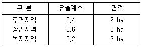
- 0.22
- 0.33
- 0.44
- 0.55
(정답률: 70%)
24. 취수탑 설치 위치는 갈수기에도 최소 수심이 얼마 이상이어야 하는가?
- 1 m
- 2 m
- 3 m
- 3.5 m
(정답률: 73%)
25. 우수배제계획의 수립 중 우수유출량의 억제에 대한 계획으로 옳지 않은 것은?
- 우수유출량의 억제방법은 크게 우수저류형, 우수침투형 및 토지이용의 계획적관리로 나눌 수 있다.
- 우수저류형 시설 중 On-site시설은 단지 내 저류 및 우수조정지, 우수체수지 등이 있다.
- 우수침투형은 우수유출총량을 감소시키는 효과로서 침투 지하매설관, 침투성 포장 등이 있다.
- 우수저류형은 우수유출총량은 변하지 않으나 첨두유출량을 감소시키는 효과가 있다.
(정답률: 70%)
26. 정수처리 방법 중 트리할로메탄(trihalomethane)을 감소 또는 제거시킬 수 있는 방법으로 가장 거리가 먼 것은?
- 중간염소처리
- 전염소처리
- 활성탄처리
- 결합염소처리
(정답률: 52%)
27. 정수시설인 착수정의 용량기준으로 적절한 것은?
- 체류시간 : 0.5분 이상, 수심 : 2~4m 정도
- 체류시간 : 1.0분 이상, 수심 : 2~4m 정도
- 체류시간 : 1.5분 이상, 수심 : 3~5m 정도
- 체류시간 : 1.0분 이상, 수심 : 3~5m 정도
(정답률: 78%)
28. 하수관거시설인 우수토실에 관한 설명으로 틀린 것은?
- 우수월류량은 계획하수량에서 우천 시 계획오수량을 뺀 양으로 한다.
- 우수토실의 오수유출관거에는 소정의 유량 이상이 흐르도록 하여야 한다.
- 우수토실은 위어형 이외에 수직오리피스, 기계식 수동 수문 및 자동식 수문, 볼텍스 밸브류 등을 사용할 수 있다.
- 우수토실을 설치하는 위치는 차집관거의 배치, 방류수면 및 방류지역의 주변환경 등을 고려하여 선정한다.
(정답률: 58%)
29. 막 여과 정수처리설비에 대한 내용으로 옳은 것은?
- 막 여과유속은 경제성 및 보수성을 종합적으로 고려하여 최저치를 설정한다.
- 회수율은 취수조건 등과 상관없이 일정하게 운영하는 것이 효율적이고 경제적이다.
- 구동압방식과 운전제어방식은 구동압이나 막의 종류, 배수조건 등을 고려하여 최적방식을 선정한다.
- 막 여과방식은 막 공급수질을 제외한 막 여과수량과 막의 종별 등의 조건을 고려하여 최적방식을 선정한다.
(정답률: 53%)
30. 정수시설의 플록형성지에 관한 설명을 틀린 것은?
- 플록형성지는 혼화지와 침전지 사이에 위치하게 하고 침전지에 붙여서 설치한다.
- 플록형성지는 응집된 미소플록을 크게 성장시키기 위하여 기계식교반이나 우류식교반이 필요하다.
- 기계식교반에서 플록큐레이터의 주변속도는 15~80cm/s로 하고, 우류식교반에서는 평균유속을 15~30cm/s를 표준으로 한다.
- 플록형성지 내의 교반강도는 하류로 갈수록 점차 증가시켜 플록 간 접촉횟수를 높인다.
(정답률: 73%)
31. 펌프의 흡입관 설치요령으로 틀린 것은?
- 흡입관은 각 펌프마다 설치해야 한다.
- 저수위로부터 흡입구까지의 수심은 흡입관 직경의 1.5배 이상으로 한다.
- 흡입관과 취수정 벽의 유격은 직경의 1.5배 이상으로 한다.
- 흡입관과 취수정 바닥까지의 깊이는 직경의 1.5배 이상으로 유격을 둔다.
(정답률: 47%)
32. 정수처리시설 중에서, 이상적인 침전지에서의 효율을 검증하고자 한다. 실험결과, 입자의 침전속도가 0.15cm/s 이고 유량이 30,000m3/day로 나타났을 때 침전효율(제거율,%)은?(단, 침전지의 유효표면적은 100m2이고 수심은 4m이며 이상적 흐름상태 가정
- 73.2
- 63.2
- 53.2
- 43.2
(정답률: 37%)
33. 길이가 500m이고 안지름 50cm인 관을 안지름 30cm인 등치관으로 바꾸면 길이(m)는? (단, Williams – Hazen식 적용)
- 35.45
- 41.55
- 43.55
- 45.45
(정답률: 42%)
34. 상수시설인 배수시설 중 배수지의 유효수심(표준)으로 적절한 것은?
- 6~8m
- 3~6m
- 2~3m
- 1~2m
(정답률: 75%)
35. 하수관거를 매설하기 위해 굴토한 도랑의 폭이 1.8m이다. 매설지점의 표토는 젖은 진흙으로서 흙의 밀도가 2.0t/m3이고, 흙의 종류와 관의 깊이에 따라 결정되는 계수 C1 = 1.5이었다. 이 때 매설관이 받는 하중(t/m)은?(단, Marston공식에 의한 계산)
- 2.5
- 5.8
- 7.4
- 9.7
(정답률: 49%)
36. 하수관의 최소관경 기준이 바르게 연결된 것은?
- 오수관거 : 150mm,
우수관거 및 합류관거 : 200mm - 오수관거 : 200mm,
우수관거 및 합류관거 : 250mm - 오수관거 : 250mm,
우수관거 및 합류관거 : 300mm - 오수관거 : 300mm,
우수관거 및 합류관거 : 350mm
(정답률: 70%)
37. 정수시설 중 약품침전지에 대한 설명으로 틀린 것은?
- 각 지마다 독립하여 사용 가능한 구조로 하여야 한다.
- 고수위에서 침전지 벽체 상단까지의 여유고는 30cm 이상으로 한다.
- 지의 형상은 직사각형으로 하고 길이는 폭의 3~8배 이상으로 한다.
- 유효수심은 2~2.5m로 하고 슬러지 퇴적심도는 50cm 이하를 고려하되 구조상 합리적으로 조정할 수 있다.
(정답률: 52%)
38. 수원 선정 시 고려하여야 할 사항으로 옳지 않은 것은?
- 수량이 풍부하여야 한다.
- 수질이 좋아야 한다.
- 가능한 한 높은 곳에 위치해야 한다.
- 수돗물 소비지에서 먼 곳에 위치해야 한다.
(정답률: 70%)
39. 캐비테이션 방지대책으로 틀린 것은?
- 펌프의 설치위치를 가능한 한 낮춘다.
- 펌프의 회전속도를 낮게 한다.
- 흡입측 밸브를 조금만 개방하고 펌프를 운전한다.
- 흡입관의 손실을 가능한 한 적게 한다.
(정답률: 74%)
40. 상수시설에서 급수관을 배관하고자 할 경우의 고려사항으로 옳지 않은 것은?
- 급수관을 공공도로에 부설할 경우에는 다른 매설물과의 간격을 30cm 이상 확보한다.
- 수요가의 대지 내에서 가능한 한 직선배관이 되도록 한다.
- 가급적 건물이나 콘크리트의 기초 아래를 횡단하여 배관하도록 한다.
- 급수관이 개거를 횡단하는 경우에는 가능한 한 개거의 아래로 부설한다.
(정답률: 68%)
3과목: 수질오염방지기술
41. 다음에서 설명하는 분리방법으로 가장 적합한 것은?
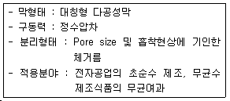
- 역삼투
- 한외여과
- 정밀여과
- 투석
(정답률: 66%)
42. 물 5m3의 DO가 9.0mg/L이다. 이 산소를 제거하는 데 필요한 아황산나트륨의 양(g)은?
- 256.5
- 354.7
- 452.6
- 488.8
(정답률: 45%)
43. 생물학적 인제거공정에서 설계 SRT가 상대적으로 짧으며, 높은 유기부하율을 설계에 사용할 수 있는 장점이 있고, 타공법에 비해 운전이 비교적 간단하고 폐슬러지의 인함량이 높아(3~5%) 비료의 가치를 가지는 것은?
- A/O공정
- 개량 Bardenpho공정
- 연속회분식반응조(SBR)공정
- UCT 공법
(정답률: 64%)
44. 폐수 시료에 대해 BOD 시험을 수행하여 얻은 결과가 다음과 같을 때 시료의 BOD(mg/L)는?
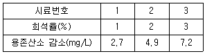
- 약 115
- 약 190
- 약 250
- 약 300
(정답률: 49%)
45. 다음 공정에서 처리될 수 있는 폐수의 종류는?
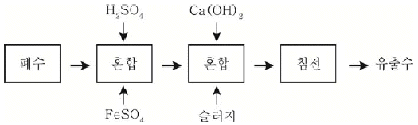
- 크롬폐수
- 시안폐수
- 비소폐수
- 방사능폐수
(정답률: 65%)
46. 원형 1차침전지를 설계하고자 할 때 가장 적당한 침전지의 직경(m)은? (단, 평균유량 =9,000m3/day, 평균표면부하율 = 45m3/m·day, 최대유량 = 2.5×평균 유량, 최대표면부하율 =100m3/m2·day)
- 12
- 15
- 17
- 20
(정답률: 53%)
47. CSTR 반응조를 일차반응조건으로 설계하고, A의 제거 또는 전환율이 90%가 되게 하고자 한다. 반응상수 k가 0.35/hr일 때 CSTR 반응조의 체류시간(hr)은?
- 12.5
- 25.7
- 32.5
- 43.7
(정답률: 45%)
48. 산기식포기장치가 수심 4.5m의 곳에 설치되어 있고, 유입하수의 수온은 20℃, 포기조산소흡수율이 10%인 포기장치에 대한 산소포화농도값(Cs, mg/L)은?(단, 20℃일 때 증류수의 포화용존산소농도 = 9.02mg/L, β = 0.95)
- 8.9
- 9.9
- 10.09
- 12.3
(정답률: 33%)
49. 활성슬러지의 2차 침전조에 대한 설명으로 틀린 것은?
- 고형물 부하로만 설계한다.
- 미생물(Biomass)의 보관 창고 역학을 한다.
- 슬러지 농축의 역할을 한다.
- 고액 분리의 역할을 한다.
(정답률: 50%)
50. 소독을 위한 자외선 방사에 관한 설명으로 틀린 것은?
- 5~400nm 스펙트럼 범위의 단파장에서 발생하는 전자기 방사를 말한다.
- 미생물이 사멸되며 수중에 잔류방사량(잔류살균력이 있음)이 존재한다.
- 자외선소독은 화학물질 소비가 없고 해로운 부산물도 생성되지 않는다.
- 물과 수중의 성분은 자외선의 전달 및 흡수에 영향을 주며 Beer-Lambert법칙이 적용된다.
(정답률: 61%)
51. 생물학적 처리법 가운데 살수여상법에 대한 설명으로 가장 거기가 먼 것은?
- 슬러지일령은 부유성장 시스템보다 높아 100일 이상의 슬러지일령에 쉽게 도달된다.
- 총괄 관측수율은 전형적인 활성슬러지 공정의 60~80% 정도이다.
- 덮개 없는 여상의 재순환율을 증대시키면 실제로 여상 내의 평균온도가 높아진다.
- 정기적으로 여상에 살충제를 살포하거나 여상을 침수토록 하여 파리문제를 해결할 수 있다.
(정답률: 50%)
52. 연속 회분식 활성슬러지법인 SBR(Sequencing Batch Reactor)에 대한 설명으로 ‘최대의 수량을 포기조 내에 유지한 상태에서 운전목적에 따라 포기와 교반을 하는 단계’는?
- 유입기
- 반응기
- 침전기
- 유출기
(정답률: 68%)
53. 평균 유량이 20,000m3/day인 도시하수처리장의 1차 침전지를 설계하고자 한다. 최대유량/평균유량 = 2.75이라면 침전조의 직경(m)은?(단, 1차 침전지에 대한 권장 설계기준 : 최대 표면부하율 = 50m3/m2·day, 평균 표면부하율 = 20m3/m2·day)
- 32.7
- 37.4
- 42.5
- 48.7
(정답률: 53%)
54. 하수내 질소 및 인을 생물학적으로 처리하는 UCT 공법의 경우 다른 공법과는 달리 침전지에서 반송되는 슬러지를 혐기조로 반송하지 않고 무산소조로 반송하는데, 그 이유로 가장 적합한 것은?
- 혐기조에 질산염의 부하를 감소시킴으로써 인의 방출을 증대시키기 위해
- 호기조에서 질산화된 질소의 일부를 잔류 유기물을 이용하여 탈질시키기 위해
- 무산소조에 유입되는 유기물 부하를 감소시켜 탈질을 증대시키기 위해
- 후속되는 호기조의 질산화를 증대시키기 위해
(정답률: 42%)
55. 활성슬러지 공정의 2차 침전지에서 나타나는 일반적인 고형물 농도와 침전속도의 관계를 바르게 나타낸 그래프는?
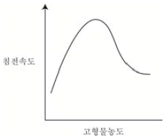
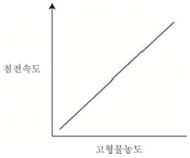
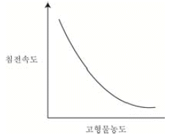
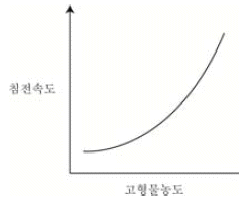
(정답률: 60%)
56. 탈질소 공정에서 폐수에 첨가하는 약품은?
- 응집제
- 질산
- 소석회
- 메탄올
(정답률: 54%)
57. 폐수처리 후 나머지 BOD 25kg과 인 1.5kg을 호수로 방류하였다. 1 mg의 인은 0.1g의 algae를 합성하고 1 g의 algae가 부패하면 140mg의 DO를 소비한다. 이 처리로 인한 호수의 DO 소비량(kg)은?(단, BOD 1kg = O2 1kg이다.)
- 21
- 25
- 46
- 55
(정답률: 40%)
58. 유기물의 감소반응이 2차반응(Vc= -KC2)이라 할 때 반응 후 초기농도(Co=1)에 대하여 유출농도(Ce = 0.2)가 80% 감소되도록 하는데 필요한 CFSTR(완전혼합반응기)와 PFR(플럭흐흠반응기)의 부피비는?(단, CFSTR의 물질수지식 : O=QCo – QCe – VKCe2(정상 상태), PFR은 정상상태에서
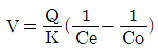
의 식으로 표현)- CFSTR : PFR = 5 : 1
- CFSTR : PFR = 7 : 1
- CFSTR : PFR = 10 : 1
- CFSTR : PFR = 15 : 1
(정답률: 44%)
59. 음용수 중 철과 망간의 기준 농도에 맞추기 위한 그 제거 공정으로 알맞지 않은 것은?
- 포기에 의한 침전
- 생물학적 여과
- 제올라이트 수착
- 인산염에 의한 산화
(정답률: 44%)
60. 농축슬러지를 혐기성소화로 안정화시키고자 할 때 메탄 생성량(kg/day)은? (단, 농축슬러지에 포함된 유기성분은 모두 글루코오스(C6H12O6)이며 미생물에 의해 100% 분해, 소화조에서 모두 메탄과 이산화탄소로 전환된다고 가정, 농축슬러지 BOD = 480mg/L, 유입유량 = 200m3/day)
- 18
- 24
- 32
- 41
(정답률: 46%)
4과목: 수질오염공정시험기준
61. 배출허용기준 적합여부를 판정을 위해 자동시료채취기로 시료를 채취하는 방법의 기준은?
- 6시간 이내에 30분이상 간격으로 2회이상 채취하여 일정량의 단일 시료로 한다.
- 6시간 이내에 1시간이상 간격으로 2회이상 채취하여 일정량의 단일 시료로 한다.
- 8시간 이내에 1시간이상 간격으로 2회이상 채취하여 일정량의 단일 시료로 한다.
- 8시간 이내에 2시간이상 간격으로 2회이상 채취하여 일정량의 단일 시료로 한다.
(정답률: 62%)
62. 수질분석용 시료 채취 시 유의사항과 가장 거리가 먼 것은?
- 시료 채취 용기는 시료를 채우기 전에 깨끗한 물로 3회 이상 씻은 다음 사용한다.
- 유류 또는 부유물질 등이 함유된 시료는 시료의 균일성이 유지될 수 있도록 채취하여야 하며 침전물 등이 부상하여 혼입되어서는 안 된다.
- 용존가스, 환원성 물질, 휘발성유기화합물, 냄새, 유류 및 수소이온 등을 측정하는 시료는 시료용기에 가득 채워야 한다.
- 시료 채취량은 보통 3~5L 정도이어야 한다.
(정답률: 75%)
63. 원자흡수분광광도법의 용어에 관한 설명으로 틀린 것은?
- 공명선 : 원자가 외부로부터 빛을 흡수했다가 다시 처음 상태로 돌아갈 때 방사하는 스펙트럼선
- 역화 : 불꽃의 연소속도가 크고 혼합기체의 분출속도가 작을 때 연소현상이 내부로 옯겨지는 것
- 다음극 중공음극램프 : 두 개 이상의 중공음극을 갖는 중공음극램프
- 선프로파일 : 파장에 대한 스펙트럼선의 근접도를 나타내는 곡선
(정답률: 45%)
64. 알킬수은 화합물의 분석 방법으로 옳은 것은?(단, 수질오염공정시험기준 기준)
- 기체크로마토그래피법
- 자외선/가시선 분광법
- 이온크로마토그래피법
- 유도결함플라스마-원자발광분광법
(정답률: 49%)
65. 시험관법으로 분원성대장균군을 측정하는 방법으로 ( )에 옳은 내용은?
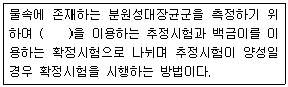
- 배양시험관
- 다람시험관
- 페트리시험관
- 멸균시험관
(정답률: 60%)
66. 수질오염공정시험기준상 질산성 질소의 측정법으로 가장 적절한 것은?
- 자외선/가시선분광법(디아조화법)
- 이온크로마토그래피법
- 이온전극법
- 카드뮴 환원법
(정답률: 43%)
67. 크롬을 원자흡수분광광도법으로 분석할 때 0.02M – KMnO4(MW = 158.03)용액을 조제하는 방법은?
- KMnO4 8.1 g을 정제수에 녹여 전량을 100mL로 한다.
- KMnO4 3.4 g을 정제수에 녹여 전량을 100mL로 한다.
- KMnO4 1.8 g을 정제수에 녹여 전량을 100mL로 한다.
- KMnO4 0.32 g을 정제수에 녹여 전량을 100mL로 한다.
(정답률: 57%)
68. 물벼룩을 이용한 급성 독성 시험법에 관한 내용으로 틀린 것은?
- 물벼룩은 배양 상태가 좋을 때 7~10일 사이에 첫 부화된 건강한 새끼를 시험에 사용한다.
- 시험하기 2시간 전에 먹이를 충분히 공급하여 시험 중 먹이가 주는 영향을 최소화 한다.
- 시험생물은 물벼룩인 Daphina magna straus를 사용하며, 출처가 명확하고 건강한 개체를 사용한다.
- 보조먹이로 YCT(yeast, chlorophyll, trout chow)를 첨가하여 사용할 수 있다.
(정답률: 64%)
69. 수질오염공정시험기준상 시료의 보존방법이 다른 항목은?
- 클로로필 a
- 색도
- 부유물질
- 음이온계면활성제
(정답률: 43%)
70. 기준전극과 비교전극으로 구성된 pH 측정기를 사용하여 수소이온농도를 측정할 때 간섭 물질에 관한 내용으로 옳지 않은 것은?
- pH는 온도변화에 따라 영향을 받는다.
- pH 10 이상에서 나트륨에 의한 오차가 발생할 수 있는데 이는 낮은 나트륨 오차전극을 사용하여 줄일 수 있다.
- 일반적으로 유리전극은 산화 및 환원성 물질, 염도에 의해 간섭을 받는다.
- 기름층이나 작은 입자상이 전극을 피복하여 pH측정을 방해할 수 있다.
(정답률: 49%)
71. 유기물 함량이 비교적 높지 않고 금속의 수산화물, 산화물, 인산염 및 황화물을 함유하는 시료의 전처리(산분해법)방법으로 가장 적합한 것은?
- 질산법
- 황산법
- 질산-황산법
- 질산-염산법
(정답률: 53%)
72. 불소화합물 측정에 적용 가능한 시험방법과 가장 거리가 먼 것은? (단, 수질오염공정시험기준 기준)
- 자외선/가시선 분광법
- 원자흡수분광광도법
- 이온전극법
- 이온크로마토그래피
(정답률: 45%)
73. 용매추출/기체크로마토그래피를 이용한 휘발성 유기화합물 측정에 관한 내용으로 틀린 것은?
- 채수한 시료를 헥산으로 추출하여 기체크로마토그래프를 이용하여 분석하는 방법이다.
- 검출기는 전자포획검출기를 선택하여 측정한다.
- 운반기체는 질소로 유량은 20~40mL/min이다.
- 컬럼온도는 35~250℃이다.
(정답률: 38%)
74. 유량산출의 기초가 되는 수두측정치는 영점수위측정치에서 무엇을 뺀 값인가?
- 흐름의 수위측정치
- 웨어의 수두
- 유속측정치
- 수로의 폭
(정답률: 44%)
75. 시험과 관련된 총칙에 관한 설명으로 옳지 않은 것은?
- “방울수”라 함은 0℃에서 정제수 20방울을 적하할 때 그 부피가 약 10mL 되는 것을 뜻한다.
- “찬 곳”은 따로 규정이 없는 한 0~15℃의 곳을 뜻한다.
- “감압 또는 진공”이라 함은 따로 규정이 없는 한 15mmHg 이하를 말한다.
- “약”이라 함은 기재된 양에 대하여 ±10%이상의 차가 있어서는 안 된다.
(정답률: 68%)
76. 용존산소를 적정법으로 측정하고자 할 때 Fe(Ⅲ)(100~200mg/L)이 함유되어 있는 시료의 전처리방법으로 적절한 것은?
- 황산의 첨가 후 플루오린화칼륨용액(100g/L)
- 황산의 첨가 후 플루오린화칼륨용액(300g/L)
- 황산의 첨가 전 플루오린화칼륨용액(100g/L)
- 황산의 첨가 전 플루오린화칼륨용액(300g/L)
(정답률: 42%)
77. 자외선/가시선 분광법으로 시안을 정량할 때 시료에 포함되어 분석에 영향을 미치는 물질과 이를 제거하기 위해 사용되는 시약을 틀리게 연결한 것은?
- 유지류 : 클로로폼
- 황화합물 : 아세트산아연용액
- 잔류염소 : 아비산나트륨용액
- 질산염 : L-아스코르빈산
(정답률: 48%)
78. 기체크로마토그래피로 측정되지 않은 것은?
- 염소이온
- 알킬수은
- PCB
- 휘발성저급염소화탄화수소류
(정답률: 37%)
79. 자외선/가시선 분광법으로 하는 크롬 측정에 관한 내용으로 틀린 것은?
- 3가 크롬은 과망간산칼륨을 첨가하여 6가 크롬으로 산화시킨다.
- 정량한계는 0.04mg/L이다.
- 적자색 착화물의 흡광도를 620nm에서 측정한다.
- 몰리브덴, 수은, 바나듐, 철, 구리 이온이 과량 함유되어 있는 경우, 방해 영향이 나타날 수 있다.
(정답률: 50%)
80. 유속 면적법을 이용하여 하천유량을 측정할 때 적용 적합 지점에 관한 내용으로 틀린 것은?
- 가능하면 하상이 안정되어 있고 식생의 성장이 없는 지점
- 합류나 분류가 없는 지점
- 교량 등 구조물 근처에서 측정할 경우 교량의 상류 지점
- 대규모 하천을 제외하고 가능한 부자로 측정할 수 있는 지점
(정답률: 52%)
5과목: 수질환경관계법규
81. 5년 이하의 징역 또는 5천만원 이하의 벌금형에 처하는 경우가 아닌 것은?
- 공공수역에 특정수질 유해물질 등을 누출·유출시키거나 버린 자
- 배출시설에서 배출되는 수질오염물질을 방지시설에 유입하지 않고 배출한 자
- 배출시설의 조업정지 또는 폐쇄명령을 위반한 자
- 신고를 하지 아니하거나 거짓으로 신고를 하고 배출시설을 설치하거나 그 배출시설을 이용하여 조업한 자
(정답률: 36%)
82. 배출부과금 부과 시 고려사항이 아닌 것은?
- 배출허용기준 초과 여부
- 배출되는 수질오염물질의 종류
- 수질오염물질의 배출기간
- 수질오염물질의 위해성
(정답률: 52%)
83. 산업폐수의 배출규제에 관한 설명으로 옳은 것은?
- 폐수배출시설에서 배출되는 수질오염물질의 배출허용기준은 대통령이 정한다.
- 시·도 또는 인구 50만 이상의 시는 지역환경 기준을 유지하기가 곤란하다고 인정할 때에는 시·도지사가 특별배출허용기준을 정할 수 있다.
- 특별대책지역의 수질오염방지를 위해 필요하다고 인정할 때는 엄격한 배출허용기준을 정할 수 있다.
- 시·도안에 설치되어 있는 폐수무방류 배출시설은 조례에 의해 배출허용기준을 적용한다.
(정답률: 43%)
84. 공공폐수처리시설의 유지·관리기준에 따라 처리시설의 관리·운영자가 실시하여야 하는 방류수 수질검사의 주기는?(단, 시설의 규모는 1일당 2,000m3이며, 방류수 수질이 현저하게 악화되지 않은 상황임)
- 월 2회 이상
- 주 2회 이상
- 월 1회 이상
- 주 1회 이상
(정답률: 37%)
85. 발생폐수를 공공폐수처리시설로 유입하고자 하는 배출시설 설치자는 배수관거 등 배수설비를 기준에 맞게 설치하여야 한다. 배수 설비의 설치방법 및 구조기준으로 틀린 것은?
- 배수관의 관경은 내경 150mm이상으로 하여야 한다.
- 배수관은 우수관과 분리하여 빗물이 혼합되지 아니하도록 설치하여야 한다.
- 배수관 입구에는 유효간격 10mm이하의 스크린을 설치하여야 한다.
- 배수관의 기점·종점·합류점·굴곡 점과 관경·관종이 달라지는 지점에는 유출 구를 설치하여야하며, 직선인 부분에는 내경의 200배 이하의 간격으로 맨홀을 설치하여야 한다.
(정답률: 47%)
86. 환경정책기본법에서 지하·지표 및 지상의 모든 생물과 이들을 둘러싸고 있는 비생물적인 것을 포함한 자연의 상태를 의미하는 것은?
- 생활환경
- 대자연
- 자연환경
- 환경보전
(정답률: 58%)
87. 사업장별 환경기술인의 자격기준에 관한 설명으로( )에 맞는 것은?
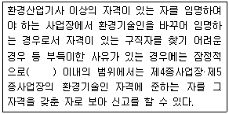
- 6월
- 90일
- 60일
- 30일
(정답률: 38%)
88. 초과배출부과금의 부과 대상이 되는 수질오염물질이 아닌 것은?
- 유기인화합물
- 시안화합물
- 대장균
- 유기물질
(정답률: 48%)
89. 수질오염방지시설 중 생물화학적 처리시설이 아닌 것은?
- 살균시설
- 접촉조
- 안정조
- 폭기시설
(정답률: 57%)
90. 시·도지사 등이 환경부장관에게 보고할 사항 중 보고 횟수가 연 1회에 해당되는 것은? (단, 위임업무 보고사항)
- 기타 수질오염원 현황
- 폐수위탁·사업장 내 처리현황 및 처리실적
- 골프장 맹·고독성 농약 사용 여부 확인 결과
- 비점오염원의 설치신고 및 현황
(정답률: 50%)
91. 다음에 해당되는 수질오염 감시경보 단계는?
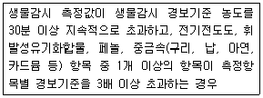
- 주의 단계
- 경계 단계
- 심각 단계
- 발생 단계
(정답률: 49%)
92. 폐수처리업의 업종구분을 가장 알맞게 짝지은 것은?
- 폐수 위탁처리업 – 폐수 재활용업
- 폐수 수탁처리업 – 측정대행업
- 폐수 위탁처리업 – 방지시설업
- 폐수 수탁처리업 – 폐수 재이용업
(정답률: 49%)
93. 공공수역의 전국적인 수질 현황을 파악하기 위해 환경부장관이 설치할 수 있는 측정망의 종류로 틀린 것은?
- 생물 측정망
- 토질 측정망
- 공공수역 유해물질 측정망
- 비점오염원에서 배출되는 비점오염물질 측정망
(정답률: 48%)
94. 환경부장관이 지정할 수 있는 비점오염원관리 지역의 지정기준에 관한 내용으로( )에 옳은 것은?
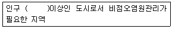
- 10만 명
- 30만 명
- 50만 명
- 100만 명
(정답률: 52%)
95. 오염총량관리 기본방침에 포함되어야 하는 사항으로 틀린 것은?
- 오염총량관리 대상지역
- 오염원의 조사 및 오염부하량 산정방법
- 오염총량관리의 대상 수질오염물질 종류
- 오염총량관리의 목표
(정답률: 38%)
96. 배출시설에 대한 일일기준초과배출량 산정 시 적용되는 일일유량의 산정 방법으로 ( )에 맞는 것은?
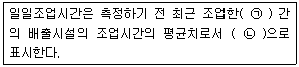
- ㉠ 3월, ㉡ 분
- ㉠ 3월, ㉡ 시간
- ㉠ 30일, ㉡ 분
- ㉠ 30일, ㉡ 시간
(정답률: 57%)
97. 방지시설을 설치하지 아니한 자에 대한 1차 행정처분기준 중 개선명령에 해당되는 것은? (단, 항상 배출허용기준 이하로 배출된다는 사유 및 위탁처리한다는 사유로 방지시설을 설치하지 아니한 경우)
- 폐수를 위탁하지 아니하고 그냥 배출한 경우
- 폐수 성상별 저장시설을 설치하지 아니한 경우
- 개선계획서를 제출하지 아니하고 배출허용기준을 초과하여 수질오염물질을 배출한 경우
- 폐수위탁처리 시 실적을 기간 내에 보고하지 아니한 경우
(정답률: 35%)
98. 대권역 수질 및 수생태계 보전계획의 수립 시 포함되어야 하는 사항으로 틀린 것은?
- 수질 및 수생태계 변화 추이 및 목표기준
- 수질오염원 발생원 대책
- 수질오염 예방 및 저감대책
- 상수원 및 물 이용현황
(정답률: 34%)
99. 특별시장·광역시장·특별자치시장·특별자치도지사가 오염총량관리시행계획을 수립할 때 포함하여야 하는 사항으로 틀린 것은?
- 해당 지역 개발계획의 내용
- 수질예측 산정자료 및 이행 모니터링 계획
- 연차별 오염부하량 삭감 목표 및 구체적 삭감 방안
- 오염원 현황 및 예측
(정답률: 25%)
100. 비점오염저감시설 중 장치형 시설이 아닌 것은?
- 생물학적 처리형 시설
- 응집·침전 처리형 시설
- 와류형 시설
- 침투형 시설
(정답률: 53%)
뇨의 경우 질소화합물을 전체 VS의 40~50% 정도 함유하고 있으며, 분뇨의 경우에는 질소화합물을 전체 VS의 5~10% 정도 함유하고 있다. 질소화합물은 주로 암모니아(NH3)와 암모늄 이온(NH4+) 형태로 존재하며, 알칼리도를 높게 유지시켜 주므로 pH의 강하를 막아주는 완충작용을 한다.